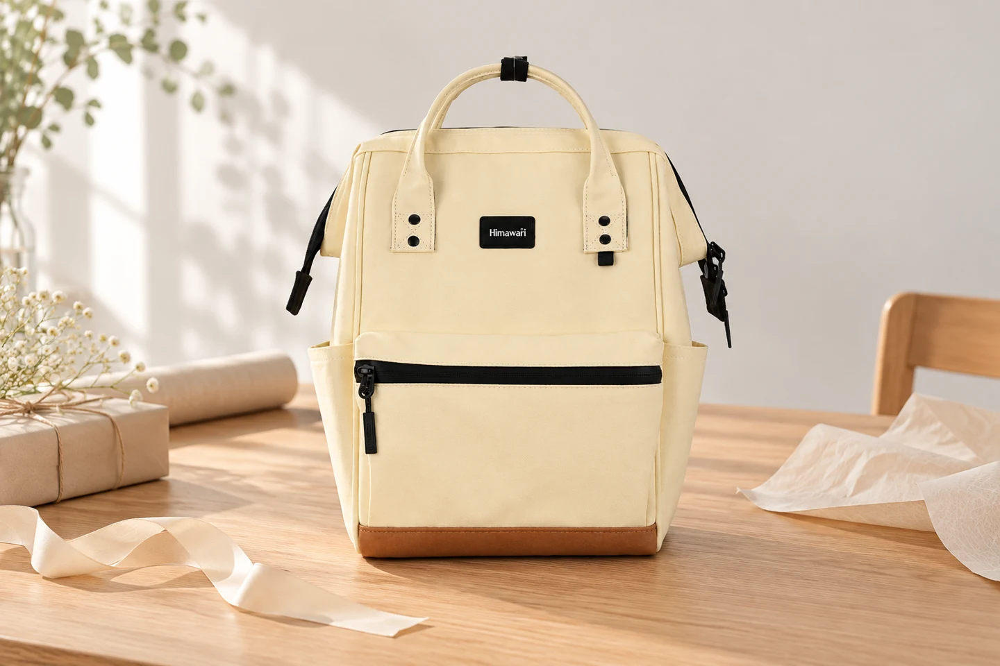

백팩 선물 고르기: 받는 사람에게 먼저 물어볼 세 가지

가방을 선물할 때는 내가 예쁘다고 느끼는 디자인부터 눈에 들어옵니다. 하지만 매일 메는 사람은 따로 있습니다. 취향을 전부 알아맞히려 하기보다, 어떤 하루에 쓸 가방인지 함께 이야기해 보세요. 선물할 모델을 바로 공개하지 않아도 필요한 단서는 얻을 수 있습니다.
“지금 가방에서 가장 불편한 게 뭐야?”
새 가방에 바라는 점을 직접 묻기 어렵다면 지금 쓰는 가방 이야기를 꺼내보세요. 안쪽이 잘 보이지 않는지, 작은 물건이 섞이는지, 손으로 들 일이 많은지에 따라 살펴볼 부분이 달라집니다. “가벼운 게 좋아”라는 대답에는 가방 자체의 무게와 평소 넣는 짐 중 어느 쪽이 부담인지 한 번 더 물어보는 편이 좋습니다.
“어떤 날에 가장 자주 쓸 것 같아?”
출근용인지, 주말 외출용인지, 새 학기에 쓸 것인지 한 가지 주된 장면을 정합니다. 그다음 실제로 들고 다니는 물건 중 가장 큰 것을 확인하세요. 노트북이나 서류를 넣어야 한다면 모델명만 추측하지 말고 기기와 파일의 실제 크기를 받아 제품 안내와 비교합니다. 모르는 치수는 선물의 기대감으로 대신하지 말고 구매 전에 문의하세요.
“이 두 색 중에서는 어떤 쪽이 더 너다워?”
선물하는 사람이 정한 한 가지를 설득하기보다 서로 다른 두 후보를 보여주세요. 밝은 색과 어두운 색처럼 구분이 분명하면 이유를 말하기 쉽습니다. 상대가 이미 쓰는 가방과 비슷한 색을 고른다고 해서 새로운 선물의 의미가 줄어드는 것은 아닙니다. 평소 손이 가는 색이라는 단서일 수 있습니다.
후보를 줄일 때는 선택 이유를 한 줄로
“출근할 때 파일을 넣고, 주말에는 손으로 들기 편한 형태”처럼 받은 답변을 한 문장으로 적어보세요. 후보마다 그 조건이 실제 제품 정보로 확인되는지 대조하면 장식이나 색만 보고 고르는 일을 줄일 수 있습니다. 상대가 선택을 원한다면 마지막 두 후보를 함께 비교하는 과정도 선물의 일부가 됩니다.
포장은 확인할 여지를 남겨두세요
선물 날짜에 맞출 수 있는지 배송 안내를 확인하고, 받아 본 뒤에는 주문한 모델과 색상이 맞는지 먼저 살펴봅니다. 제품 택과 안내 자료는 보관하고, 포장 전에 끈과 지퍼가 눈에 띄게 꼬이거나 눌리지 않았는지 확인하세요. 받는 사람이 직접 착용해 볼 수 있도록 준비하면 예쁜 포장뿐 아니라 실제 사용까지 생각한 선물이 됩니다.
참고·안내
- Himawari No.124S 제품 정보
- 제품의 크기·구성·사용 방법은 구매할 옵션의 실제 안내를 확인하세요. 이 글은 개별 제품의 성능이나 구매자 경험을 보증하지 않습니다.
- 실제 Himawari No.124S 제품 사진을 참조해 만든 AI 연출 이미지입니다. 포장 소품은 제품 구성품이 아닙니다.
자주 묻는 질문
깜짝 선물이라 직접 물어보기 어렵다면요?
평소 쓰는 가방에서 불편하다고 말했던 점과 자주 쓰는 색을 단서로 삼으세요. 기기 크기처럼 꼭 필요한 정보가 없다면 추측해서 확정하기보다 함께 고를 수 있는 여지를 남기는 편이 좋습니다.
대표 이미지처럼 포장 소품도 함께 오나요?
대표 이미지는 선물 준비 장면을 표현한 연출 이미지입니다. 포장지와 리본은 제품 구성품을 뜻하지 않으며, 실제 구성은 구매할 상품의 안내를 확인하세요.